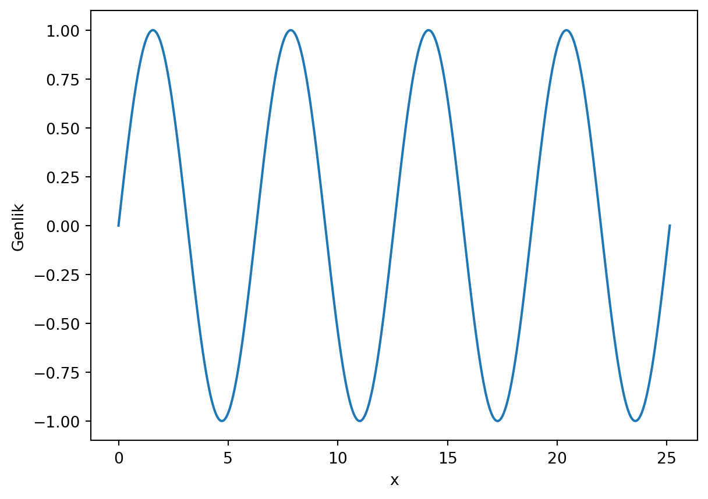
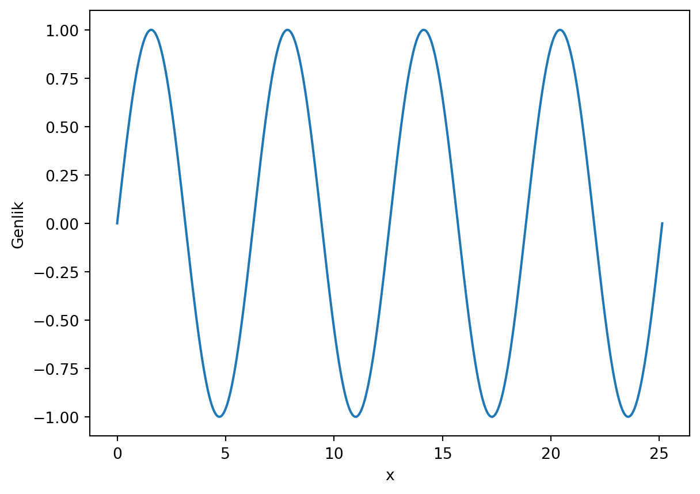
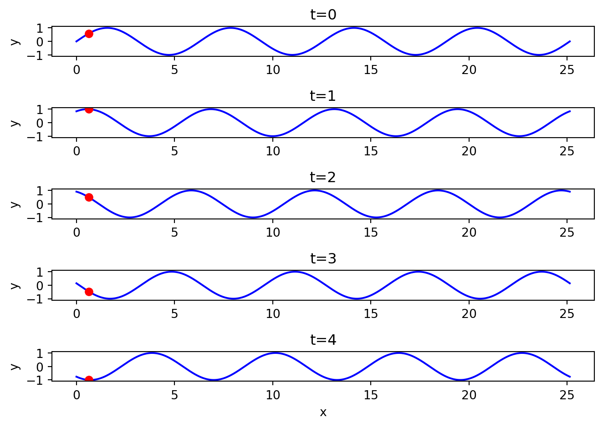
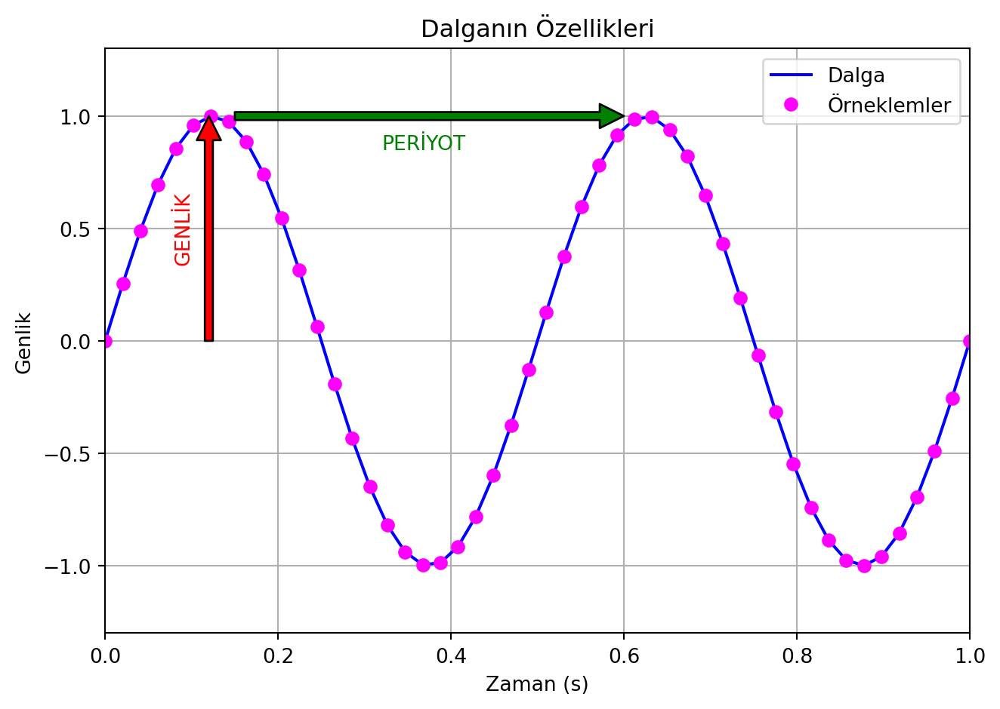
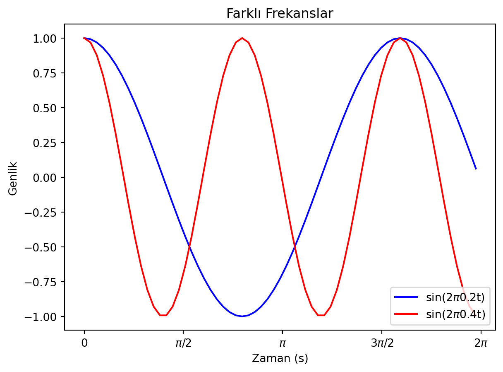
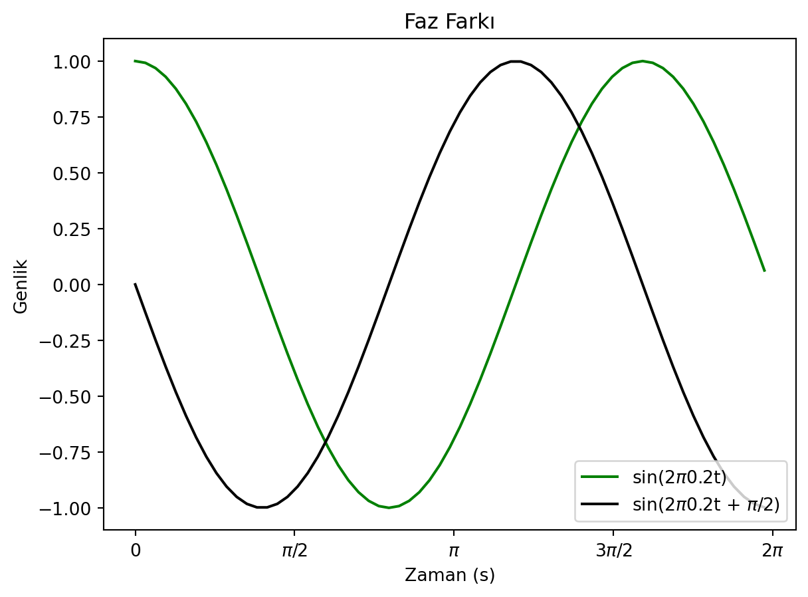

import numpy as np
import matplotlib.pyplot as plt
# x-y noktaları
x= np.linspace(0,8*np.pi,1000)
y= np.sin(x)
# Çiz
plt.plot(x,y)
plt.ylabel('Genlik')
plt.xlabel('x')
plt.show()
Basit bir sinüs dalgası oluşturalım.
import numpy as np
import matplotlib.pyplot as plt
# x-y noktaları
x= np.linspace(0,8*np.pi,1000)
y= np.sin(x)
# Çiz
plt.plot(x,y)
plt.ylabel('Genlik')
plt.xlabel('x')
plt.show()
Sinüs dalgası hem zamanda hem de uzayda değişebilir. Yukarıda çizilen dalga zaman içerisinde değişmemektedir yani durağan bir dalgadır. Durağan olmayan dalgalara örnek bir kod yazalım.
import numpy as np
import matplotlib.pyplot as plt
# Zaman
zaman= np.arange(5)
x= np.linspace(0,8*np.pi,1000)
n= len(zaman)
#Çiz
for t in zaman:
plt.subplot(n,1,t+1)
y= np.sin(x+t)
plt.plot(x,y, 'b')
plt.plot(x[25], y[25], 'ro')
plt.ylim(-1.1,1.1)
plt.ylabel('y')
plt.title(f"t={t}")
plt.xlabel('x')
plt.tight_layout()
plt.show()
Yukarıdaki grafikte kırmızı nokta durağan olmayan bir dalganın konumunu göstermektedir. Bu davranış, tıpkı bir su dalgası üzerinde bulunan bir odun parçasının yukarı aşağıya gitmesi gibidir. Dalga x doğrultusunda ilerlerken, odun parçası yukarı aşağıya hareket eder.
Dalgaların karakteristik özelliklerini tanımlayan bazı ifadeler aşağıda maddelenmiştir.
Dalgalar/sinyaller sürekli tekrar eder. Analiz yaparken dalgaların belirli bir aralıktaki değerini çizdiririz. Bu aralığa pencere aralığı denir. Örneğin bir ses dalgasının ekolayzorını yapmak isteyelim. Basların ve tizlerin yoğunluğunu belirli bir pencere aralığında gösteririz ve bu bas/tizler şarkının her pencere aralığında farklı değerler olacaktır.
Bu nicelikleri grafik üzerinde gösteren python kodunu yazalım [1].
import numpy as np
import matplotlib.pyplot as plt
# Dalganın karakteristikleri
frekans = 2 # Hz
periyot = 1 / frekans # s
genlik = 1
dalga_uzunlugu = 2 # metre
# Zaman aralığı
t = np.linspace(0, 2* periyot, 50)
# Dalganın formülü
dalga = genlik * np.sin(2* np.pi* frekans* t)
# Çiz
plt.plot(t, dalga, label='Dalga', color='blue')
plt.plot(t, dalga, 'o', label='Örneklemler', color='magenta')
# Genlik oku
plt.annotate('', xy=(0.12, genlik), xytext=(0.12, 0),
arrowprops=dict(facecolor='red'))
plt.text(0.08, genlik / 2.8, 'GENLİK', rotation=90, color='red')
# Periyot oku
plt.annotate('', xy=(0.6, 1), xytext=(0.15, 1),
arrowprops=dict(facecolor='green'))
plt.text(0.32, 0.85, 'PERİYOT', rotation=0, color='green')
plt.title('Dalganın Özellikleri')
plt.xlabel('Zaman (s)')
plt.ylabel('Genlik')
plt.xlim(0, 2*periyot)
plt.ylim(-1.3, 1.3)
plt.grid(True)
plt.legend()
plt.tight_layout()
plt.show()
Yukarıdaki şekilde fuşya (galibarda, magenta) noktalar ise örneklemdir (sampling).
Örneklem oranı (sampling rate) ise örneklem sıklığını gösterir. Örneklem sıklığını yukarıdaki grafikte noktaların sıklığı olarak düşünebiliriz. Örneklem oranı arttıkça dalga daha iyi bir şekilde temsil edilir.
Diğer karakteristikleri de anlamak için durağan olmayan bir sinüs dalgası ele alalım.
\[ y(t) = A \sin(\omega t + \phi) \]
Burada \(A\) genlik, \(\omega\) açısal frekans, \(\phi\) ise fazdır.
Açısal frekans ise \(\omega = 2 \pi f\) şeklinde hesaplanır. Burada \(f\) frekansıdır.
Faz, \(\phi\) ise dalganın başlangıç noktasını belirler.
import numpy as np
import matplotlib.pyplot as plt
# Zaman
t = np.arange(0,2* np.pi, 0.1)
# Çiz (farklı frekanslar)
plt.title("Farklı Frekanslar")
plt.plot(t, np.cos(2*np.pi*0.2*t), "b", label="sin(2$\pi$0.2t)")
plt.plot(t, np.cos(2*np.pi*0.4*t), "r", label="sin(2$\pi$0.4t)")
plt.ylabel("Genlik")
plt.xlabel("Zaman (s)")
plt.xticks([0, np.pi/2, np.pi, 3*np.pi/2, 2*np.pi],
["0", "$\pi$/2", "$\pi$", "3$\pi$/2", "2$\pi$"])
plt.legend()
plt.show()
plt.close()
# Çiz (farklı fazlar)
plt.title("Faz Farkı")
plt.plot(t, np.cos(2*np.pi*0.2*t), "g", label="sin(2$\pi$0.2t)")
plt.plot(t, np.cos(2*np.pi*0.2*t+ np.pi/2),
"k", label="sin(2$\pi$0.2t + $\pi$/2)")
plt.ylabel("Genlik")
plt.xlabel("Zaman (s)")
# X label in terms of pi
plt.xticks([0, np.pi/2, np.pi, 3*np.pi/2, 2*np.pi],
["0", "$\pi$/2", "$\pi$", "3$\pi$/2", "2$\pi$"])
plt.legend()
plt.show()

Yukarıdaki grafikte farklı frekanslar ve farklı fazlar için dalgalar çizilmiştir. İki veya daha fazla dalganın üst üste binmesiyle oluşan dalgaların analizi için Fourier analizi kullanılır.
\(0\) ile \(L\) arasında sonsuz kuyuda hapsedilmiş parçacığın durağan dalga fonksiyonu aşağıdaki gibi yazılır.
\[ \psi(x)=\sqrt{\frac{2}{L}}\sin\left(\frac{n\pi x}{L}\right) \]
Burada \(L=2\) [birimsiz] kuyunun uzunluğu, \(n\) ise kuantum numarasıdır. Aşağıdaki soruları cevaplayın.